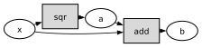
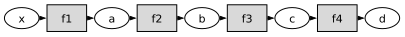
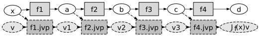
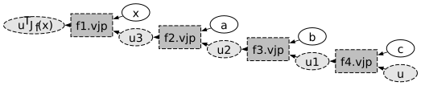

Automatic Differentiation#
Automatic differentiation augments a computation with another computation that propagates derivatives through the same primitive operations. It applies the chain rule to the computational graph exactly, up to floating-point arithmetic.
Computational graphs#
A computational graph is a directed acyclic graph (or DAG) that encodes the computation of a multivariate function. We are going to use two types of nodes in the graph. Tensor nodes (i.e., numerical arrays) are represented by ellipses. Operation nodes (i.e., mathematical operations) are represented by shaded boxes. The mathematical operators we consider here are primitive operators: operations treated as indivisible at the chosen level of description. Which operators are primitive depends on where we build the computational graph. For example, if we are working directly at the level of the compiler of a programming language, the primitives are just the basic arithmetic operations (e.g., addition, multiplication). At a higher level, primitives can include matrix multiplication, trigonometric functions, exponentials, and power functions. Because we are working within Python, we will use the second approach. This is the level exposed by libraries such as PyTorch and JAX.
Here is an example. Consider the following function:
Here is a good implementation of this function in Python:
def f(x):
a = x ** 2
b = a + x
return b
The implementation names the intermediate results a and b. The node sqr below computes the square, and add computes the sum. When x is a tensor, libraries such as PyTorch and JAX record a computational graph of this form:

The directed edges alternate between tensor values and primitive operations and follow the evaluation order from the input \(x\) to the output \(b\). An automatic-differentiation system treats each primitive as atomic and supplies local derivative rules for it. To differentiate \(b=f(x)\) with respect to \(x\), the system augments this graph with operations that propagate derivative information.
Full Jacobians#
We begin with a chain of four differentiable primitive functions, \(f_1\), \(f_2\), \(f_3\), and \(f_4\). Generic DAGs are discussed later. Their composition defines \(f\) by
Let their domains and codomains be
so that
Using functional notation, we can write \(f\) as the composition of the four functions:
For two stages, let \(f_{1,k}\) denote component \(k\) of \(f_1\) and \(f_{2,i}\) component \(i\) of \(f_2\). The chain rule gives, for \(i=1,\ldots,q\) and \(j=1,\ldots,n\),
where \(\partial_j\) denotes differentiation with respect to input coordinate \(j\). The last expression uses the Einstein convention: the repeated index \(k=1,\ldots,p\) is summed. We write \(J_f(x)\) for the Jacobian matrix with entries \([J_f(x)]_{ij}=\partial_j f_i(x)\). In matrix form,
In other words, the Jacobian of \(f_2\circ f_1\) is a \(q\times n\) matrix, and it is the product of the Jacobian of \(f_2\) and the Jacobian of \(f_1\). Let’s now add the rest of the functions:
The corresponding code names each intermediate value:
def f(x):
a = f1(x)
b = f2(a)
c = f3(b)
d = f4(c)
return d
Thus,
The resulting computational graph is:

Using the intermediate variables, the chain rule becomes
The desired Jacobian is therefore a product of the primitive Jacobians. A direct algorithm would
Run the computational graph forward to compute the intermediate variables.
Compute the Jacobian of each primitive function.
Multiply the Jacobians in chain-rule order.
The intermediate Jacobians can be prohibitively large in machine-learning applications. Automatic differentiation avoids forming them explicitly.
Forward-mode automatic differentiation#
For a direction \(v\in\mathbb{R}^n\), forward mode computes the Jacobian-vector product (JVP) \(J_f(x)v\):
This calculation requires only the local JVP rule for each primitive. We write primitive.jvp(z, w) for the primitive’s Jacobian at \(z\) applied to the incoming tangent vector \(w\). The vectors v1, v2, and v3 below are the propagated tangents:
a = f1(x)
v1 = f1.jvp(x, v)
b = f2(a)
v2 = f2.jvp(a, v1)
c = f3(b)
v3 = f3.jvp(b, v2)
d = f4(c)
Jfv = f4.jvp(c, v3)
The computational graph below overlays this tangent calculation on the ordinary value computation, often called the primal computation. Solid nodes and edges show the primal computation; dashed nodes and edges show the JVP calculation.

Forward mode carries one tangent vector alongside each primal value and never forms a full intermediate Jacobian.
Choosing \(v=e_j\), the \(j\)-th standard basis vector of \(\mathbb{R}^n\), extracts one Jacobian column:
Computing every column requires \(n\) forward sweeps. For a scalar loss, \(n\) is the number of model parameters while \(m=1\), so this cost scales with \(n\), as coordinatewise finite differences do. Unlike finite differences, automatic differentiation has no step size and introduces no truncation error. Reverse mode exploits the small output dimension.
Reverse-mode automatic differentiation#
For a cotangent \(u\in\mathbb{R}^m\), a vector of sensitivities attached to the output, reverse mode computes the vector-Jacobian product (VJP) \(u^{\mathsf T} J_f(x)\):
Suppose each primitive provides a local VJP rule. The vectors u1, u2, and u3 below are the cotangents propagated from the output back toward the input:
# Forward pass
a = f1(x)
b = f2(a)
c = f3(b)
d = f4(c)
# Backward pass
u1 = f4.vjp(c, u)
u2 = f3.vjp(b, u1)
u3 = f2.vjp(a, u2)
uTJf = f1.vjp(x, u3)
In the graph below, solid edges supply stored primal values to the VJP operations, while dashed edges carry cotangents backward.

Reverse mode normally stores the intermediate primal values and traverses the graph once forward and once backward. Computing the entire Jacobian requires one forward evaluation followed by \(m\) reverse sweeps, using \(u=e_i\) for \(i=1,\ldots,m\). For a scalar loss, \(m=1\) and \(u=1\), so one reverse sweep after the forward evaluation computes the gradient with respect to all \(n\) parameters. In machine learning, this reverse-mode calculation is called backpropagation.
Generic computational graphs#
Branches require one additional local rule. Consider
implemented as
def f(x):
a = x + x
return a
The primitive \(\operatorname{add}:\mathbb{R}^n\times\mathbb{R}^n\to\mathbb{R}^n\) maps a pair of tensors to their sum. The map \(\operatorname{fanout}:\mathbb{R}^n\to\mathbb{R}^n\times\mathbb{R}^n\) duplicates its input: \(\operatorname{fanout}(x)=(x,x)\). Therefore,
After identifying \(\mathbb{R}^n\times\mathbb{R}^n\) with \(\mathbb{R}^{2n}\), the fanout Jacobian is the \(2n\times n\) matrix
Its JVP duplicates an incoming tangent. In reverse mode, cotangent contributions arriving through the two outgoing paths are added before propagation continues toward the input.
The same construction applies to
implemented as:
def f(x):
a = x * x
b = a + x
return b
Here the square and the addition act componentwise. Let \(\operatorname{sqr}(x)=x\odot x\), where \(\odot\) denotes componentwise multiplication, and let \(\operatorname{id}\) be the identity map. Then
The product map \(\operatorname{sqr}\times\operatorname{id}:\mathbb{R}^n\times\mathbb{R}^n\to\mathbb{R}^n\times\mathbb{R}^n\) sends \((x_1,x_2)\) to \((\operatorname{sqr}(x_1),\operatorname{id}(x_2))\). Traversing operations in dependency order, applying local JVP/VJP rules, and adding cotangent contributions at branches extend automatic differentiation from chains to arbitrary DAGs.
Further reading#
Matt Johnson’s Autodidact is a compact pedagogical implementation of Autograd. It illustrates the core operator-overloading ideas behind automatic-differentiation libraries such as PyTorch and JAX.